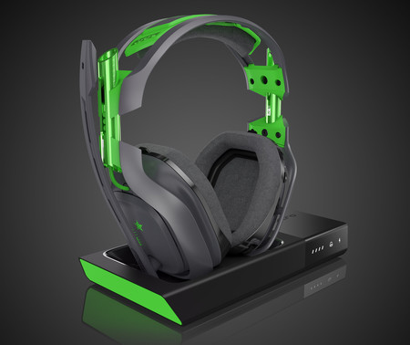

Solucciones S.A.C
PC GAMER
Un PC está compuesto de los siguientes componentes:
Pantalla. La pantalla o monitor es el dispositivo que se encarga de mostrarte las imágenes. ...
Caja o gabinete. También llamada a veces CPU. ...
Un teclado y ratón. ...
Procesador. ...
Memoria RAM. ...
Placa base. ...
Tarjeta gráfica. ...
PC de escritorio.
Audifono GAMER
Auriculares gaming: qué tienen de especial, por qué decimos que son para jugar y modelos recomendados. Los accesorios para gaming están de moda. ... Los auriculares para jugar ante todo son auriculares, y lo más importante es su sonido

Mouse GAMER
Mouse es una palabra inglesa que significa ratón. Más allá de hacer referencia al roedor (como ocurre con Mickey, el personaje de Disney que no necesita presentación alguna), la noción de mouse, en español, es entendida como el dispositivo apuntador que permite interactuar con una computadora